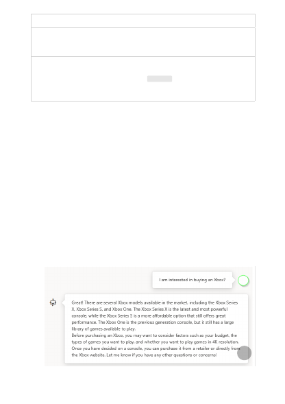
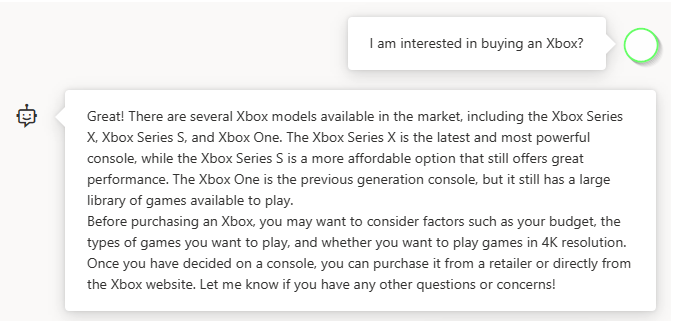

Name
Description
Multi-turn
conversations
Select the number of past messages to include in each new API request. This
helps give the model context for new user queries. Setting this number to 10
results in five user queries and five system responses.
Stop
sequences
Stop sequence make the model end its response at a desired point. The model
response ends before the specified sequence, so it won't contain the stop
sequence text. For ChatGPT, using <|im_end|> ensures that the model response
doesn't generate a follow-up user query. You can include as many as four stop
sequences.
By default there are three panels: assistant setup, chat session, and settings. Show
panels allows you to add, remove, and rearrange the panels. If you ever close a panel
and need to get it back, use Show panels to restore the lost panel.
1. From the assistant setup drop-down, select Xbox customer support agent
2. You'll be prompted asking if you want to update the system message, select
Continue.
3. In the chat session pane, enter the following question: "I'm interested in buying a
new Xbox", and select Send.
4. You'll receive a response similar to:
5. Enter a follow-up question like: "which models support 4K?"
Show panels
Start a chat session
{kind=link}